Authenion Documentation
Application Integration
On-boarding your Applications into Authenion for SSO
Release Notes
Release: 2023
Deployment: April 2023
Software Download: LikeMinds Helpdesk portal
Release Summary
Authenion-2.0 version is now generally available. Authenion-2.0 release has new features, bug fixes, security enhancements and updated documentation.
Features & Enhancements
Admins can now configure Authenion through the Administrative console. Admins can onboard/manage target Applications, OIDC Providers, Product License and lot more through the administrative console.
Authenion administrative console is hosted by LikeMinds and is available at Admin UI.
The logging framework has been changed to Apache Log4j2 from Logback. Audit logging is now available for recording the event occurance, type, time and responsible user or service.
Authenion Cluster is available and it provides high-availability & scalability. Authenion has inbuilt load balancer for its backend connections. However, Authenion still requires a network load balancer to automatically balance traffic in the cluster.
Authenion instance status can be monitored through the console. A health-check endpoint is also available to monitor its status through any monitoring tools.
Fixes
AQ4-2022-1001: Multiple occurances of SSO transaction in authenion-engine logs.
AQ1-2023-1001: Authenion engine log recycling and log file size limit to 10MB.
AQ1-2023-1002: REST API calls authorization for Authenion agent.
AQ1-2023-1003: Cookie is configured with SameSite attribute
AQ2-2023-1006: Multiple sync requests to the same Agent APIs.
AQ2-2023-1008: Header Mapping page shows blank screen when there is no data present in OIDC claims.
Getting Started
This guide provides information about getting started with Authenion to deploy a secure and scalable platform to enable single sign-on (SSO) to your Enterprise applications based on the security and industry standards.
1. Introduction
Authenion enables single sign-on (SSO) solution for your Enterprise applications like Oracle and other custom applications (Java, PHP, .Net, etc.,) supporting the HTTP Headers authentication mechanism. Authenion integrates with standard OpenID Connect providers in the market such as PingFederate, PingOne, Azure, etc., for authentication related events and on the other end, it connects with the applications to securely transfer the SSO related details to the applications.
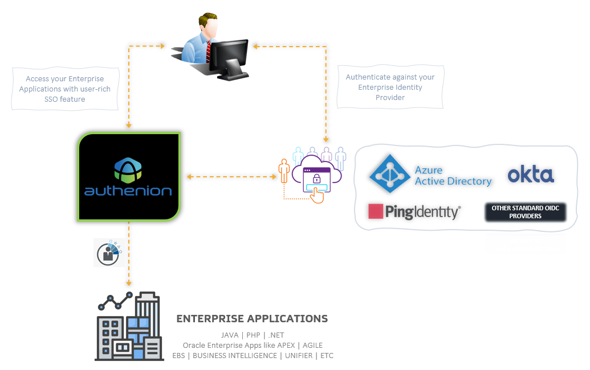2. Enterprise Deployment Model
Authenion supports a Gateway architecture for its protected applications. In this model, the traffic is initially directed to Authenion. Authenion grants or denies access by redirecting the traffic to Authentication providers.
This deployment model can be set up quickly without disrupting the applications. The Authenion will not be installed on separate servers from the application web servers.
With the fewer component architecture, it is easy to identify issues and troubleshoot. All transactions are logged, and it is easier to view any specific events.
3. What can I do with Authenion?
Authenion is a light-weight product that allows you to enable a secure Single Sign-On solution for your Enterprise applications.
The main functionalities are:
Use Authenion to protect your Enterprise applications
Connect Authenion with external OpenID Connect providers for authentication
You can manage sessions for the protected applications and use OAuth scopes to send user data to applications
4. How does Authenion work?
Authenion acts as the gateway to your Applications and capture user requests & delegate it to your Identity Provider (IdP) for authentication.
Session Initiation
Using advanced & secured integration standards, Authenion securely connects with your Identity Provider using OAuth/OIDC protocols. This allows Authenion protected application requests to be delegated to your centralized Identity Provider in your organization.
The Identity Provider will be responsible for challenging the user requests with strong authentication schemes. The Identity Provider will also be responsible for collecting the user attributes and send it to Authenion through OAuth/OIDC tokens for further processing such as session establishment & granting user-access.
Processing Steps
User request access for the Application
Authenion checks for the user session, and it redirects the user’s request to IdP for authentication
IdP authenticates the user using the adapters and against a data store configured to it
IdP retrieves the necessary attributes from its configured data store and sends it to Authenion for further processing
Authenion will receive the authenticated user’s attributes and parse the attributes into HTTP-Headers and send it to the target application
Applications will retrieve & validate the HTTP-Headers from Authenion and grant access to users based on their roles and responsibilities
5. What can I Configure with Authenion?
Authenion includes a wide range of configuration features from its user interface (administrative console). The following are the configuration we can perform in Authenion admin console.
| Fields | Values |
|---|---|
|
Applications |
|
|
OIDC Configurations |
|
|
Virtual Servers |
|
|
Application Hosts |
|
|
Resources |
|
|
Header Mapping |
|
|
Authenion Instance |
|
System Requirements
The following requirements should be met for Authenion installation. Authenion qualifies & certifies the following configurations that they are compatible with the product. Authenion supports IPv4 addressing.
Installation
This section provides instructions for installing, configuring & starting/stopping Authenion product. Authenion can be installed on the Linux servers. For the System requirements, please visit System Requirements section.
1. Pre-requisites
Ensure the System Requirements are met
Install a supported Java software with the JAVA_HOME environment variable set
The JAVA_HOME variable must be set representing the location of your Java installation
2. Install Authenion
Request or download the authenion-2.0 product distribution zip file and a valid license from the Authenion support portal or by contacting your account manager in LikeMinds.
Install authenion by unzipping the authenion-2.0.zip into the “/home/appuser” directory in the Authenion server.
Authenion file system after extracting.
- Download & extract the distribution zip into the installation directory ‘/home/appuser’
- <authenion_install_dir>: /home/appuser/authenion-2.0/authenion/
- authenion-2.0
- - authenion
- - bin
- - config
- - deploy
- - logs
- - server
Copy the obtained license file “authenion.lic” to the Authenion server and place it in the <authenion_install_dir>/config directory.
|
Distribution ZIP file |
|
|
File system after extraction |
|
|
Directory Structure |
|
3. Setup Authenion
Navigate to the following directory in the Authenion server.
Execute the following command to grant permission.
Run the setup command.
Read and accept the Software Terms & Conditions. This will complete the setup process.
Note: In case if the process fails to complete the setup, you can re-run the setup script to complete it
4. Start & Stop Services
To Start the Authenion instance, navigate to the “<authenion_install_dir>/bin” directory and run the ‘start-instance.sh’ command.
To Stop the Authenion instance, run the ‘stop-instance.sh’ command.
Check the status of the Authenion application by executing the ‘status.sh’ command.
5. Authenion Health-check
To check the Authenion status through heartbeat URL, enter the following URL in the browser. This can be used for monitoring the Authenion services.
6. Install Identity Provider’s Certificate into Authenion Trust Store
The following steps will guide you to import the Identity provider’s certificate (PingFederate) into the Authenion trust store.
Export the SSL Certificate from the Identity Provider (PingFederate, PingOne, AzureAD, etc.,) and place the certificate anywhere inside “<authenion_install_dir>” in the Authenion server.
Run the following command in the Authenion server to install the Identity Provider’s certificate
7. Install SSL Certificates for Authenion (optional)
Authenion allows you to install your organization’s signed certificates. The certificates should be in the .crt & .key files format. To place your organization’s cert in Authenion, follow the steps below.
If you have the certificate & private key in pkcs format, move the certificate to the Authenion server & run the following commands.
Copy the .crt & .key extracted in the previous step and place it in “<authenion_install_dir>/server/conf/certs” directory.
The above steps can be repeated during the Authenion certificate renewal process.
Note: This setup is optional. The Certificates can also be installed on a load-balancer servers
Console Navigation & Configurations
This section describes the UI of Authenion (Admin Console) and its navigation and provides steps for accessing and configuring it. Access the Authenion UI by clicking Administrative Consle
1. Dashboard / Applications
The Dashboard / Applications page lets you view, create, or modify the applications we protect. The total protected applications will be displayed in the Dashboard Application’s tab. It also lets you access the OIDC Configuration page next to the Applications tab and access the sidebar menu for other required configurations.

2. Import - Getting config-data into the UI
The Import button in the Dashboard page lets you get the data into the UI.

The Import page has two operations:
Fetch Function: The Fetch function is used to get the data from your Authenion Server. It automatically retrieves all the Authenion config data and makes it available in the Authenion UI. It uses the Authenion Instance plugin running in the Authenion server.
Upload: The Upload operation is used to load the data from your local file system into the UI manually through any previously extracted configs.
Retrieving Config data from existing Authenion Instance
For first time installation & configuration of Authenion, skip this step and continue with the next section – OIDC Configuration.
If you have Authenion server up & running already, you can bring the configuration data into the UI through the Import function.
Click Import in the Authenion Dashboard.
In the Import page, enter the detail for Authenion Instance. For example, authenion.example.com
Click Fetch.
This will bring your Authenion configuration data from authenion server to the UI.
3. OIDC Configuration
The OIDC configuration page allows you to connect with your Identity Provider / OIDC Token Provider. This configuration includes details such as Token Providers OAuth/OIDC endpoints, Authenion Client registration details, Claims to get from the Token Provider. It includes additional configuration for Authenion such as Authenion Instance, Domain & Session duration configurations.

Adding OIDC Configuration
Click OIDC Configuration in the Dashboard page.
Enter the following details & click Save to configure your Token Provider with Authenion for authentication..
OpenID Connect Provider - Settings
- Authorization URL
- https://idp-example.com/authorize
- Token URL
- https://idp-example.com/token
- JWKS URL
- https://idp-example.com/jwks
- Logout URL
- https://idp-example.com/idp/logout
- Issuer
- https://idp-example.com
- Userinfo URL
- https://idp-example.com/idp/userinfo
- Audience
- authenion
- Client ID
- Registered value client_id from your IdP
- Client Secret
- Registered client_secret value from your IdP
- Scope
- openid (Multiple scopes can be added)
- Claims
- Claims from Identity Provider (sub, username, email, etc.,)
- Authenion Instances
- https://authenion.example.com:8090
- Note: If the Authenion is configured in cluster, enter the Authenion Instances value from all the Authenion servers. The default port is 8090 and enabled with HTTPS. Supports multiple entries.
Cookie Settings
- Cookie Domain
- example.com
- Session Duration
- 3600
| Fields | Values |
|---|---|
|
|
|
|
|
|
|
|
|
|
|
|
|
|
|
|
|
|
|
|
|
|
|
|
|
|
|
|
|
|
|
|
|
|
|
|
| Fields | Values |
|---|---|
|
|
|
|
|
|
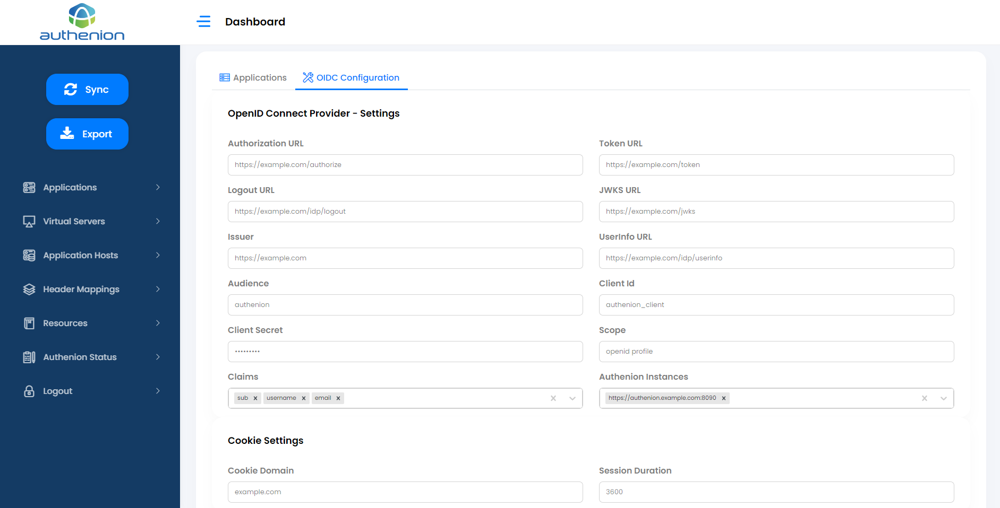
4. Sidebar
The Sidebar Menu has the following Configurations
Applications
Virtal Servers
Application Hosts
Header Mappings
Resources
Authenion Status
Sync
Export

5. Applications
Applications represent the protected Applications to which the user requests are sent. Each application will have a dedicated entry in the Dashboard/Applications tab. Applications are configured with Virtual Servers, Resources, Header Mappings & corresponds to a single Application Host (target application/backend server). Applications in Authenion can be configured with both protected and unprotected (excluded) resources. Authentication requirements will be set for the protected resources in an application
Adding an Application
Adding a protected application in Authenion has the following pre-requisites. Complete the setup for the below configurations before you create a new application.
Virtual Servers (Section 6)
Application Hosts (Section 7)
Header Mapping (Section 8)
Resources (Section 9)
To add an application, click New Application in the Dashboard page.
Enter the following details:
- 1 (Unique ID)
- My App
- ApexVirtualServer (Virtual Server configured in Section 6 )
- ApexHeaders (Header Mapping configured Section 8)
- ApexResources (Protected Resource configured Section 9)
- UnprotectdResource (Excluded Resource configured Section 9)
- ApexBackend (Application Host configured Section 7)
- https://authenion.example.com:8090 (auto populated)
Click Save to complete the configuration for a new application.
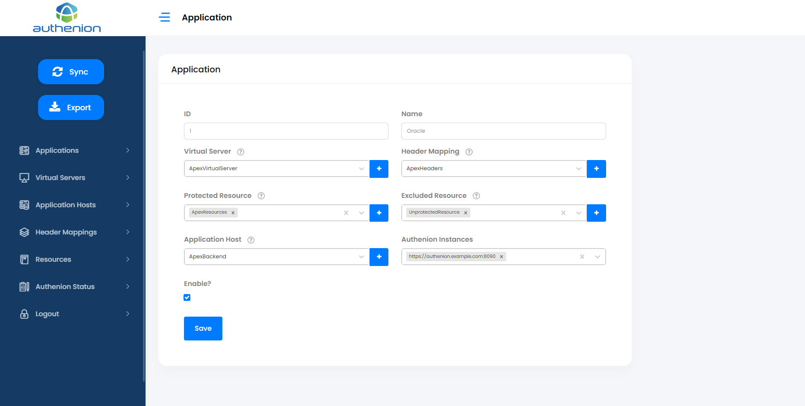
| System component | Requirements |
|---|---|
|
Application ID |
|
|
Application name |
|
|
Virtual Servers |
|
|
Header Mapping |
|
|
Protected Resource |
|
|
Excluded Resource |
|
|
Application Host |
|
|
Authenion Instances |
|
Authenion Dashboard shows the number of Applications configured.
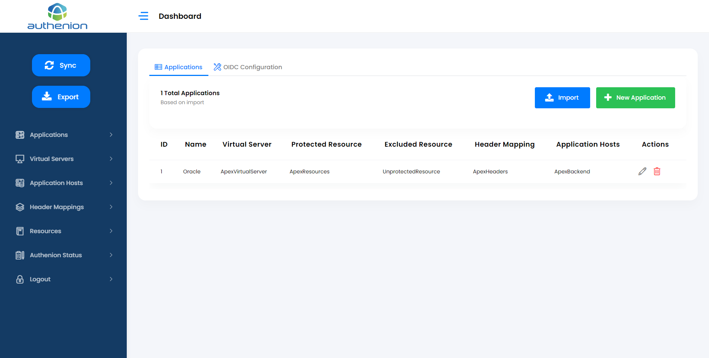6. Virtual Servers
Virtual Servers enables you to protect multiple applications and their hosts. The Virtual Server is a combination of hostname and port number and is defined by example.com:443.
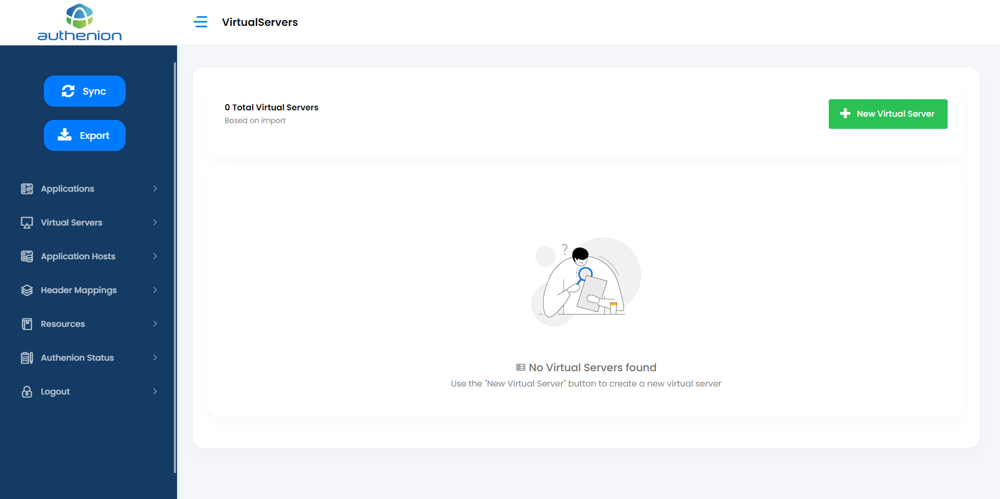Adding a Virtual Server
Click Virtual Servers in the sidebar menu.
Click the “+ New Virtual Server” button in the Virtual Servers page.
Enter the following details to create a Virtual Server for your application.
- 1 (Unique ID)
- ApexVirtualServer
- authenion.example.com (protected application domain or hostname)
- 443
- checkbox (HTTP or HTTPS)
Click Save to complete the Virtual Server configuration.
For example:
| System component | Requirements |
|---|---|
|
ID |
|
|
Name |
|
|
Host |
|
|
Port |
|
|
Use SSL |
|

7. Application Hosts
Applications Hosts are the target applications or the backend application servers that Authenion is protecting through a gateway architecture. These target application’s access requests are validated by Authenion before they are forwarded.

Adding Application Hosts
Click Application Hosts in the sidebar menu.
Click the “+New Application Host” button in the Application Hosts page.
Enter the following details to create an Application Host for your target application server
- 1 (Unique ID)
- ApexBackend
- apex.example.com:8443 (protected application/webserver details)
- checkbox (HTTP or HTTPS)
Click Save to complete the Application Host configuration.
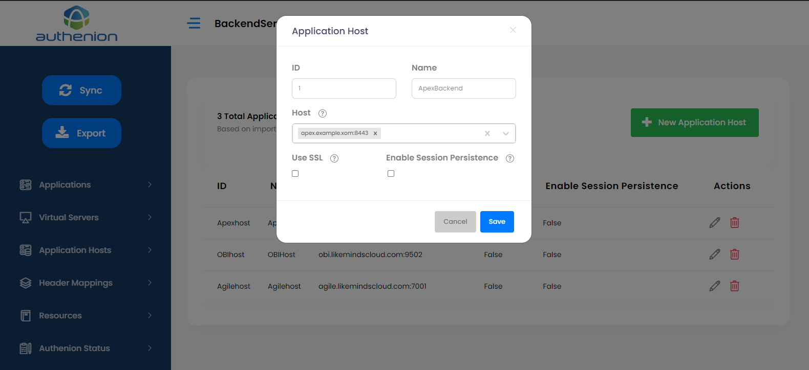
For example:
| System component | Requirements |
|---|---|
|
ID |
|
|
Name |
|
|
Host |
|
|
Use SSL |
|
8. Header Mappings
Header Mappings sends the User attributes to the target application post authentication. The target application will use them for validation purposes. The Header Mappings will receive the user attributes from the Claims which are sent by the Token Provider. Once the claims received, it is then made available as HTTP-Headers to the target applications.
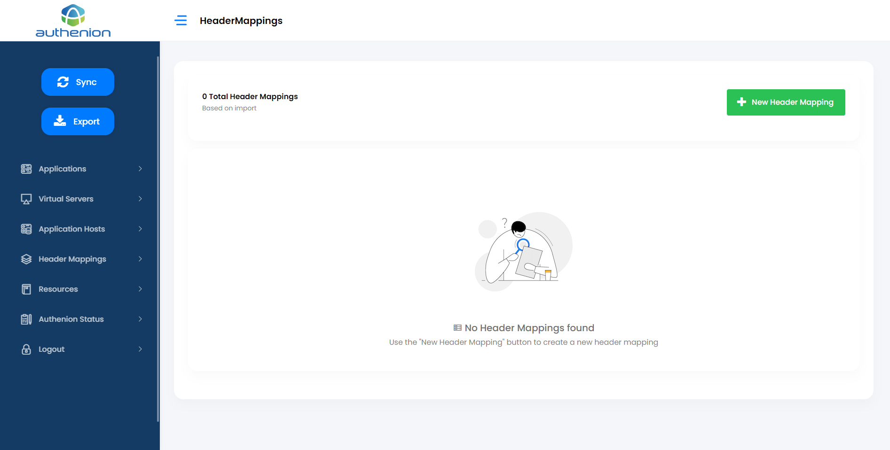Adding Header Mapping
Click Header Mappings in the sidebar menu.
Click the “+New Header Mapping” button in the Header Mappings page.
Enter the following details to create a header mapping for your target application.
- 1 (Unique ID)
- ApexHeaders
- username
Click Save to complete the Header Mappings configuration.
For example:
| System components | Requirements |
|---|---|
|
ID |
|
|
Name |
|
|
App Header |
OIDC Claims |
|
USER_NAME |
|
|
USER_MAIL |
|

9. Resources
Resources are the components/URI of the applications. The resources can be mapped as either protected or excluded resources in an application. Each application should have at least one protected & excluded resources configured to it.
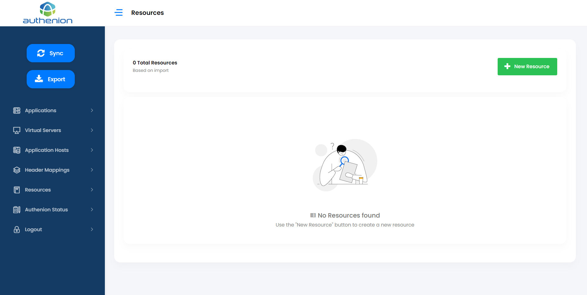Adding Resources
Click Resources in the sidebar menu.
Click the “+New Resource” button in the Resources page.
Enter the following details to create a Resources for your target application.
- 1 (Unique ID)
- ApexResources
- /apex (Resource Path starts with a ‘/’. Multiple resource paths can be added)
Click Save to complete the Resources configuration.
For example:
| System component | Requirements |
|---|---|
|
ID |
|
|
Name |
|
|
Resource Path |
|

10. Authenion Status
The Authenion Status page shows the health of the Authenion Instance that is running in the Authenion server. This status page also displays your authenion license information.
Click Authenion Status in the sidebar menu to view the status of your Authenion application.

11. Export
The Export button is a quick operation that lets you download the current configurations from the UI. The exported data will be in the format of a JSON file. This file acts as a backup for the Authenion configuration data. The downloaded file name is export.json.
12. Sync
The Sync is a manual operation lets you push all the configuration data from Authenion UI back to the Authenion server. When you install Authenion for the first time, there will be no configuration data in the UI or in the Authenion server. The Sync operation should be triggered for both new configurations & modifications that we perform in the Authenion UI. Any changes which are not pushed from the UI to Authenion server will not be reflected until Sync operation is triggered manually.

The Sync status will throw error status when it couldn’t reach the Authenion instance in Authenion server.

Configure your Identity Provider
This section provides the steps required to configure Authenion with the Identity/Token Providers like PingFederate, PingOne, Microsoft Azure, etc. The integration will be established through OAuth and OpenID Connect protocols.
1. PingFederate as the Token Provider
Pre-requisites
PingFederate application with IdP and OAuth/OIDC roles enabled
Authorization server setup in PingFederate OAuth server setting
A configured ping IdP adapter and/or authentication policy contract policy if required for authentication and grant mapping
OAuth / OIDC Configurations
This setup will manage the configurations and policy information related to OAuth client which is Authenion in our case.
Create a new Client in PingFederate for Authenion.
- value to identify Client in PingFederate
- value for client_id
- value for client_secret
- https://<authenion.example.com>:<port>/ssolibrary/oidc/callback
- enable checkbox
- enable Authorization Code checkbox
- select the accesstoken to map with this client
- select the OpenID Connect policy created earlier
Review the Client configurations and click Save.
Map an OpenID Connect Policy to this Client with the following information:
- username
Replicate the configurations if PingFederate is configured in a cluster.
| System component | Requirements |
|---|---|
|
Client Name |
|
|
Client ID |
|
|
Client Secret |
|
|
Redirect URIs |
|
|
Bypass Authorization Approval |
|
|
Allowed Grant types |
|
|
Default Access token manager |
|
|
OpenID Connect Policy |
|
For example:
In OpenID Connect Policy Management tab, create/modify the policy and add the attributes that need to be sent through id_token and userinfo endpoint.
Add the following attributesthat need to be returned in the id_token and/or as claims through userinfo endpoint.
The above attributes can be mapped with their respective Scopes in the next page. For example, openid scope


2. Microsoft Azure Active Directory as the Token Provider
Pre-requisites
Azure account with valid subscription
App registration
Client Secrets and Claim mappings
Azure Configurations
The following will register Authenion as an OAuth/OIDC client application in Microsoft Azure & establishes a unidirectional trust relationship between Authenion and Microsoft identity platform.
In the Azure Portal, switch to the tenant in which you want to register the Authenion application.
In the App registrations section, select New registration and register Authenion as web application with display name and any other required details.
Add the following Authenion URI in the Redirect URI field. This is the location where Microsoft Azure redirects the user’s request post authentication.
When the registration finishes, the Azure portal displays the Authenion application registration’s overview pane. You can find the Application ID which will also be used as the client_id when we connect Authenion & Azure through OAuth/OIDC.
You need to Credential in ‘Certificates & Secrets’ page. This acts as the client credential for the Authenion application, and it allows Authenion to authenticate as itself to Microsoft Azure.
The Authenion client application need to access resources in a web API. You can use the Microsoft Azure platform for authorizing scopes, permissions-based access to fetch the appropriate user data.
The user data can be added as claims using the OIDC userinfo endpoint. Any attributes that are required by the target application can ab added as claims in the userinfo endpoint.
Redirect URI: https://<authenion.example.com>/ssolibrary/oidc/callback


EBS Integration Kit Documentation
Release: 2022
Deployment: October 2022
Software Download: LikeMinds Helpdesk portal
Release Summary
EIK-2.3.0.2 version is now generally available. EIK-2.3.0.2 release has new features, security enhancements and updated documentation.
Features & Enhancements
EIK 2.3.0.2 now supports PingFederate 11.0.2
The cacerts file has been externalized.
Security Enhancements
EIK 2.3.0.2 uses Log4j Version 2.17.0 to address the vulnerabilities stated in CVE-2021-44228, CVE-2021-45046, and CVE-2021-45105.
Added functionality to set Security Headers and SameSite value in Cookies generated
Addressed formatting issues and issues in Cookie Service for setting multiple cookies and handling exception cases where state Cookie validation is enabled and configurable
The cacerts file has been externalized
Getting Started
This guide provides information about getting started with EIK to to enable single sign-on (SSO) to theOracle E-Business Suite
1. Introduction
The EBS Integration Kit is a light-weight java application which can be deployed in a jetty-container such as Apache Tomcat or Weblogic. The EIK is OpenID Connect Compliant as a resource server and can be configured with any OIDC Provider including PingFederate, PingOne, Azure AD, Okta etc. to receive Authentication and Authorization tokens. The EBS Integration Kit communicates with the Oracle E-Business Suite Database for Session creation and optional user-provisioning if required
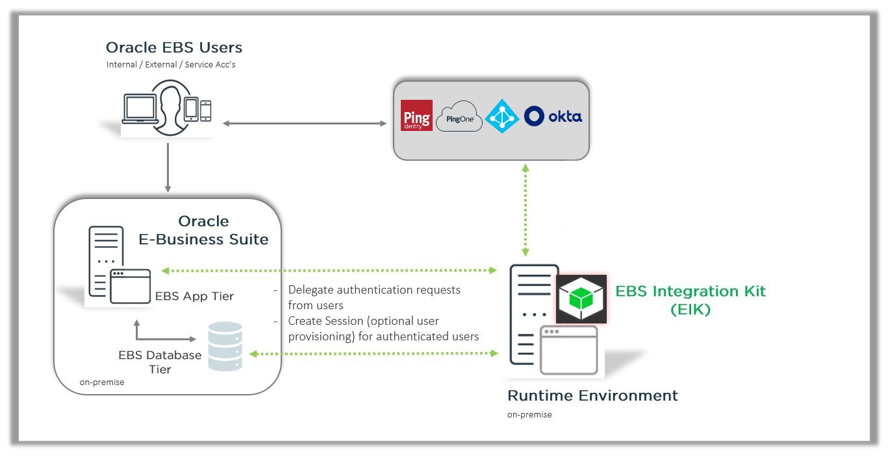2. Features
Works seamlessly with Any OIDC compliant IDP Provider
Eliminates the dependency on additional Oracle components like Oracle Internet Directory or Oracle EBS AccessGate
Provides flexibility of Deployment Methods: The EIK can be installed on the PingFederate server or any other J2EE container
Authenion Cluster is available and it provides high-availability & scalability. Authenion has inbuilt load balancer for its backend connections. However, Authenion still requires a network load balancer to automatically balance traffic in the cluster.
Supports Just-In-Time provisioning
3. Benefits
Helps achieve painless integration of modern IAM into your existing architecture
Enables you to modernize or migrate off legacy IAM without disrupting critical access to Oracle E-Business Suite
Frees you from vendor lock-in with legacy IAM licensing—you will only require your EBS license
Requires no provisioning of additional hardware components
4. How does EIK work?
The user tries to access Oracle EBS.
EBS redirects the user to the EIK.
EIK redirects the user to the configured OAuth server for Authentication and Authorization
The OAuth server returns user identity information to the EIK
The existence of the authenticated user will be checked against the EBS Database. If the user exists in the EBS DB, an EBS session would be created, and the user would be allowed access to the requested page in EBS.
If the authenticated user does not exist in the EBS DB, the user would not be authorized to access the EBS Application.
If Just-In-Time Provisioning is enabled, authenticated users not present in the EBS DB would be provisioned by the EBS IKT, and EBS Sessions would then be created, thereby giving access to the EBS Application
Configure your Identity Provider
The following steps cover the OIDC-related configurations common to all OIDC providers
1. OpenIDConnect Configuration
The OpenIDConnect Configuration Specific to the EIK should have the scope set as openid with the attribute value eik_username passed as the claim via the id token and/or the user_info endpoint
In your identity provider, map the appropriate user id value used by EBS to the eik_username claim used in the OpenIDConnect scope Configuration
2. Configuring the OAuth Client
Create an OAuth client in your OIDC provider.
Map the OpenIDConnect configuration created earlier to this client.
The Authorization Code grant type should be Selected.
Create the Client and save the OAuth client related information corresponding with the below values. These will be used to configure EIK with the token provider
-
For Additional Information on setting up OAuth clients on a few other identity providers: PingFederate, Azure AD, Okta
authentication_server_url
token_endpoint_url
introspect_url
jwks_validation_url
grant_type
introspect_url
client_id
client_secret
userinfo_url
Installation
This section provides instructions for installing and configuring EIK.
1. Setting the EIK_HOME Environment Variable
An environment variable ‘EIK_HOME’ should be set in the Java Application server before deploying the EBS Integration Kit
Select A directory location that the user has permissions to read and write.
Here, Create a new directory named “EBSAuth”.
Now, Place the provided EBS IKT license file “ebsauth.lic” in the /directory/path/to/EBSAuth directory.
Navigate to user’s base path using cd ~ and set the environmental variable for EIK_HOME in the .bash profile file
Save and close the file
Enter the following command to source the bash file: . ./.bash_profile
Verify the new settings using the following command: echo $EIK_HOME
Note: If EIK is deployed in a clustered setup for high-availability, steps 1-7 have to be replicated on all nodes
vi .bash_profile
Using the above directory path /directory/path/to/EBSAuth
Set EIK_HOME using this command: export EIK_HOME=/directory/path/to/
2. EIKAuth Config File Generation
The JAR file EIKutility.jar needs to be placed in the $EIK_HOME directory created in the previous section.
Open terminal/command prompt (as Administrator) and navigate to EIK_HOME directory and execute the following command:
On running the command, we get a dialog box as follows, Enter all values as per the configuration for all the fields using the template given below:
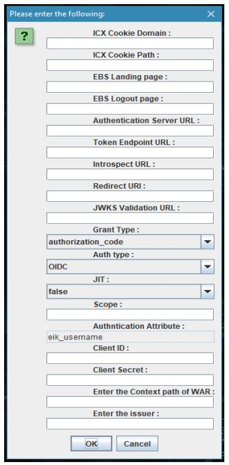
After entering these values in the dialog box, a file named EIKAuth.config gets generated at the $EIK_HOME directory
Now, move the EIKAuth.config file to the following location: /directory/path/to/EBSAuth
java -cp EIKutility.jar com.likeminds.EBSAuth.EIKAdminUtility>
icx_cookie_domain = <"domain name"> (the "." period should precede the root domain name)
icx_cookie_path = /
ebs_landing_page = <"EBS Home Page URL">
ebs_logout_page = <"token-provider-domain-name">:/example/single/logout/endpoint
authentication_server_url = <"token-provider-domain-name">/example/authorization/server/endpoint
token_endpoint_url = <"token-provider-domain-name">/example/access/token/endpoint
introspect_url = <"token-provider-domain-name">/example/introspect/endpoint
redirect_uri = <"EIK-APPLICATION-SERVER-HOSTNAME">/EBSAuth/handler
jwks_validation_url = <"token-provider-domain-name">/example/JWKS/endpoint
grant_type = authorization_code
auth_type = OIDC
JIT = false
Scope = openid (necessary scope to return EBS username from the token provider)
Authentication Attribute = eik_username (non-editable)
client_id = ***** # CLIENT_ID created in the OAuth Client at the token provider
client_secret = ***** # CLIENT_SECRET created created in the OAuth Client at the token provider
Enter the context path of WAR = <"Context of the war"> (i.e. For EBSAuth.war, context is /EBSAuth)
Enter the issuer = (OAuth/OIDC issuer)
userinfo_url=https://<"token-provider-domain-name">/example/userinfo/endpoint
trustStorePath= path/to/the/custom/cacerts
UsePrivateTrustStore=true
trustStorePassword=<"cacert store password">
3. EBS DataSource (DBCX) File Creation
Pre-requisite: Before proceeding with the DBCX file generation, a custom user should be created in the EBS Application FND_USER table (Username – EIKUSER) with the UMX|APPS_SCHEMA_CONNECT role enabled.
Place the JAR file EBSdatasource.jar in the $EIK_HOME directory & open the terminal/command prompt and navigate to EIK_HOME directory to execute and generate the EBS Datasource file:.
In the next step, provide the configuration details of your environment as mentioned in the screenshot:.
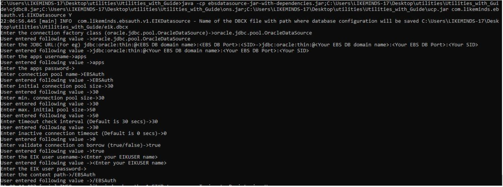
After entering all the above-mentioned values, the EIKUSER will get registered with the following messages:.
As part of the successful execution, a new file EIK.dbcx will be generated in the $EIK_HOME directory..
Now move the EIK.dbcx file to the following location:/directory/path/to/EBSAuth.
java -cp EBSdatasource.jar com.likeminds.ebsauth.v1.EIKDatasource Y
Note: The jar file can also be placed & executed in any server outside of the EIK Application server provided, there should be a connectivity to the EBS Database from the execution source
Enter the connection factory class: oracle.jdbc.pool.OracleDataSource
Enter the JDBC URL: jdbc:oracle:thin:@
(Use Scan hostnames in case of RAC database)
Enter APPS username:
Enter APPS password:
Enter Connection pool name: EBSAuth
Enter initial connection pool size: 10
Enter min. connection pool size: 10
Enter max. initial pool size: 50
Enter timeout check interval (Default is 30 secs): 30
Enter inactive connection timeout (Default is 0 secs): 30
Enter validate connection on borrow (true/false): true
Enter the EIK username: EIKUSER
Enter the EIK user password:
Enter the Context Path:
Connection established
Registering User
User has been registered successfully
Note: The jar file can also be placed & executed in any server outside of the EIK Application server provided, there should be a connectivity to the EBS Database from the execution source
4. Deploying the log4j2.xml File
Move the provided log4j2.xml file to the following location:
/directory/path/to/EBSAuth
5. Deploying the cacerts File
Move the provided cacerts file to the following location:
/directory/path/to/EBSAuth
6. Deploying the security.properties File
Move the provided security.properties file to the following location:
/directory/path/to/EBSAuth
7. Deploying EBSAuth.war binary
Move the provided EBSAuth.war binary to the Java Application Container directory Where the Jetty Container will be able to run it
Note: If EIK is deployed in a clustered setup for high-availability, the log4j2.xml, cacerts, EIK.dbcx, EIKAuth.config, security.properties files, and EBSAuth.war have to be deployed on all nodes
System Profile Parameter changes in EBS
The following Oracle EBS System Profile changes will enable SSO by delegating the authentication to OIDC-based token providers via EIK.
1. System Profile Changes
Login into the EBS Application using the System Admin credentials..
Locate and change the following EBS system profiles at Site Level for enabling SSO:
- SSWA w/SSO
- https://<"EIK-application-hostname">:<port>/EBSAuth
- Both
- Enabled
- Disabled
Restart the EBS Application Server once the changes had been made and this completes the SSO profile parameter changes in Oracle EBS..
| Parameter | Value |
|---|---|
|
Application SSO Type |
|
|
Application Authenticate Agent |
|
|
Application SSO Login Types |
|
|
Application SSO Auto Link User |
|
|
Application SSO LDAP Synchronization |
|
2. SSO Testing for Oracle EBS
Enter the URL for SSO of EBS.
This URL redirects the user to the server hosting the EIK Application,which will then redirect the browser to the Authorization endpoint of the ODIC token provider with authentication prompt for entering the user credentials
On successful validation of the user credentials, the user will get access to the EBS Homepage.
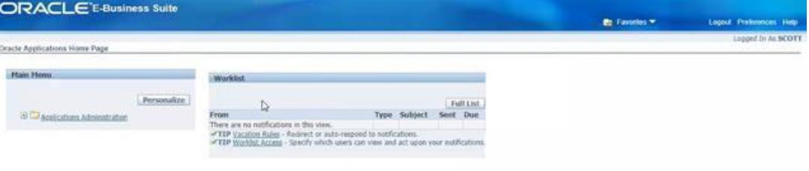